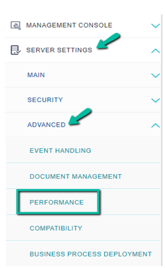
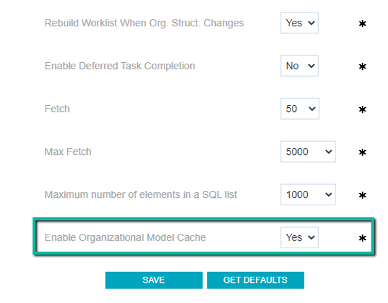
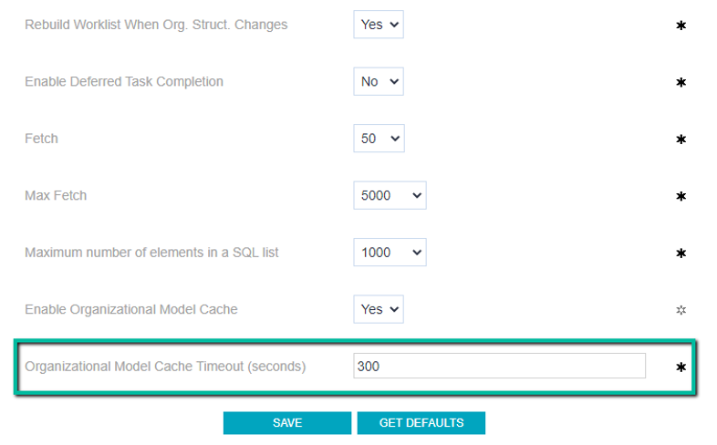

As from GeneXus 17 upgrade 1, in-memory data structures are used to calculate the users' worklist.
The data structures are populated with information related to the Organizational Model, in which the following relationships are stored:
● User - Role (Cacheable)
● Activity - Role (Cacheable)
● User - Definition of Organizational Unit - Organizational Unit (Cacheable)
● User - Definition of Organizational Unit - Organizational Unit - Role (Cacheable)
● Process Instance - Definition of Organizational Unit - Organizational Unit (NOT Cacheable)
The end-user (administrator) can choose to have the structures cached to improve performance by reducing access to the database. If the cache is not enabled (default value), the structures are always loaded from the database (*) before each operation that requires making changes to the worklist.
If caching is enabled, there will inevitably be a period of time when the effects of changes in users' roles or organizational units will not be reflected in the inbox.
For example, if a user is assigned a role, new tasks that have the role x will not appear in the user's inbox until the cache is refreshed.
Note that when the cache is refreshed, the tasks that are created from that moment on will begin to be displayed, but those that were created before will remain invisible to the user.
Tasks created before the modifications will not be affected. This is because the user's worklist is always reconstructed with fresh data.
(*) If the GeneXus resultset cache was enabled, eventually the loading could be done without accessing the database. See Optimization to build the worklist.
It is enabled by configuring the property "Enable Organizational Model Cache" to Yes, from the following option of the GXflow back-office menu:


Clicking on Save will display the property "Organizational Model Cache Timeout (seconds),” which allows configuring how often the cache is refreshed.

Considerations
The cache mechanism used is inprocess (not distributed). Therefore, if there is a server farm, the cached information will always be somewhat different from each other at some point.
When a user's worklist is reconstructed, either implicitly (because their roles or organizational units were modified and the configuration that forces the worklist to be reconstructed in this situation is enabled), or explicitly (by using the API User.RebuildWorklist() or through the apwfrebuildwoklist command), this is always done with fresh data regardless of whether the cache is enabled or not.
The GXflow structure cache mechanism is independent of the GeneXus resultset cache mechanism. When the latter is enabled, the loading of the GXflow organizational structures is made over the GeneXus cache (if the statements are in memory); otherwise, they are loaded from the database.
Keep in mind that when you use the GeneXus resultset cache and changes are made to a user's roles or organizational units, it is invalidated. Therefore, in this case, the cache always has fresh data. In other words, if both caches are enabled, there is no timeout accumulation effect.
|